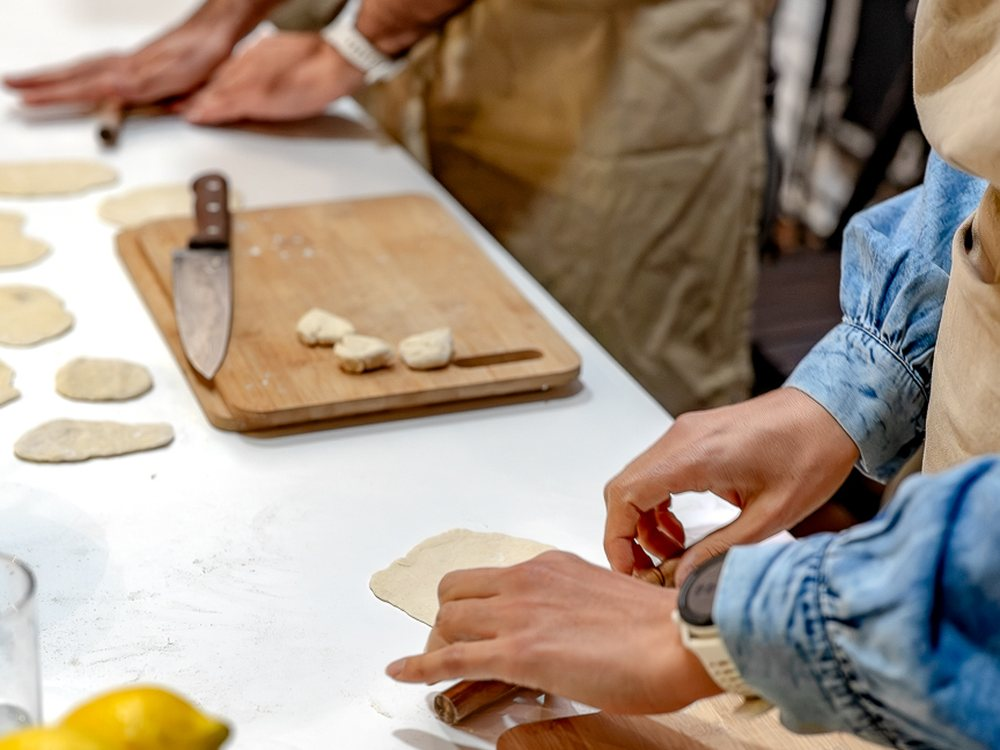
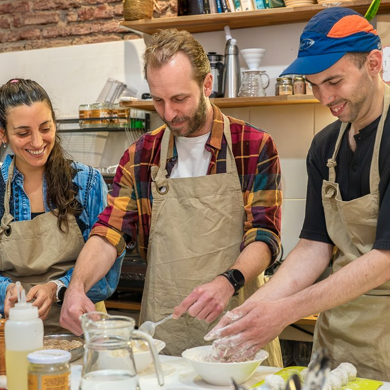
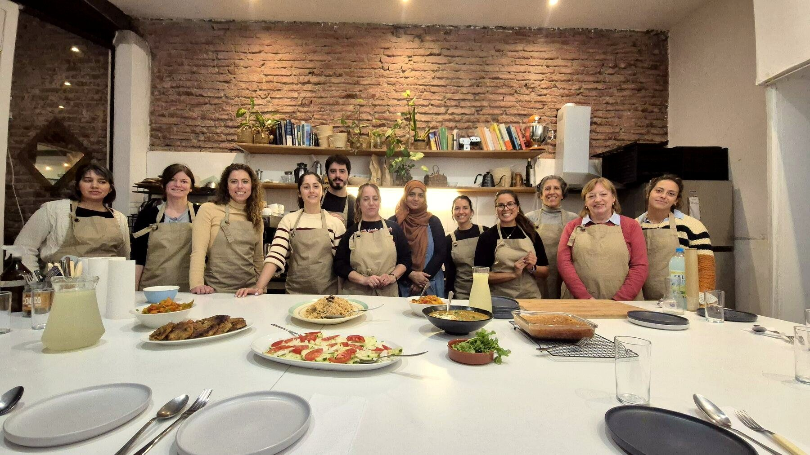
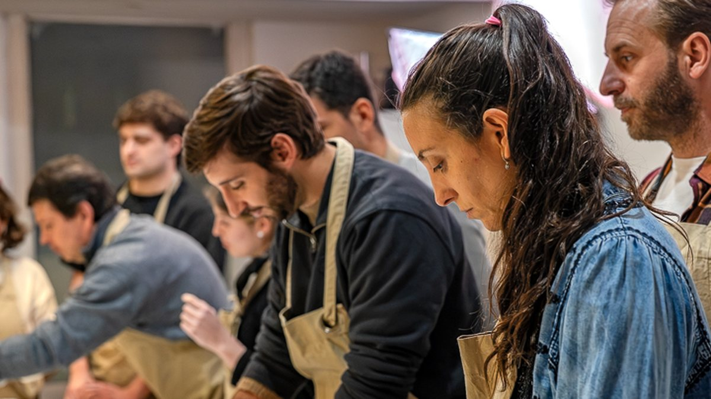

Taller de tapeo
Es la propuesta más distendida, pensada para disfrutar de la cocina, de la comida y de la conversación entre compañeros. Entre todos preparan tapas para compartir y arman la mesa.
Proponemos un espacio de disfrute para los equipos de trabajo: cocinar juntos y compartir la mesa, con una cocina saludable y sustentable. La guía Leonardo Lemes, chef con 25 años de oficio, en nuestro estudio de Parque Rodó o en su empresa.
Desde 2013, con más de 1.200 personas formadas, y 4,9 en 23 reseñas en Google.

Las pensamos con la misma idea: que el equipo cocine junto un menú de cocina saludable y sustentable, y que la jornada termine alrededor de la mesa.

Es la propuesta más distendida, pensada para disfrutar de la cocina, de la comida y de la conversación entre compañeros. Entre todos preparan tapas para compartir y arman la mesa.

La pensamos para que el equipo despida el año cocinando junto. Preparan su cena de fin de año, la comparten en una mesa larga y la noche termina con un brindis.
Preparar un menú entre varias personas exige lo mismo que un proyecto. Hay que repartir las tareas, coordinar los tiempos de cada plato y comunicarse para que todo llegue a la mesa a la vez.
En la cocina, los roles habituales pasan a segundo plano. Personas de distintas áreas trabajan juntas en tareas concretas, con un resultado que todos pueden ver y probar.
La jornada termina alrededor de la mesa, con el equipo compartiendo lo que preparó en una conversación distendida, lejos de la agenda de la oficina. Y cada participante aprende técnicas que puede aplicar en su propia cocina.
Cocinamos de forma saludable y sustentable, con un menú pensado para que todo el equipo coma lo mismo y comparta la misma mesa.
Durante la actividad, Leonardo explica por qué funciona cada técnica y cómo combinar los alimentos, desde la alimentación consciente que guía nuestro trabajo desde 2013.
Es una cocina creativa, energética y nutritiva, y por eso la actividad encaja en los programas de bienestar de las empresas.
Las empresas suelen elegir esta actividad en ocasiones como estas.

El menú, la fecha y el lugar los definimos en conjunto, porque cada equipo es distinto. Si alguien no come gluten o tiene una alergia, nos lo indican al coordinar.
Puede participar todo el equipo, cocine o no en su casa, porque Leonardo explica cada técnica y acompaña al grupo durante toda la elaboración.
Podemos recibirlos en nuestro estudio de Parque Rodó, alrededor de una mesa larga, o ir a su empresa con los anafes y todo lo necesario para cocinar.
Los detalles los definimos al coordinar, y nos ocupamos de toda la organización, ingredientes incluidos, para que el equipo solo tenga que llegar. Para completar la jornada, Leonardo da charlas sobre cocina saludable y sustentable, y para otros eventos de la empresa nos encargamos del catering.
Quien quiera conocer el estudio antes de decidir puede venir a la Cena y Taller de Tapeo, una noche abierta al público para cocinar, divertirse y comer en grupo. Para eventos corporativos y capacitación de equipos gastronómicos, el detalle está en eventos y consultoría.
«Excelente los cursos, gran persona Leo, se nota la pasión por la cocina saludable, tuve el gusto de trabajar con él y es una fuente de conocimientos, hermoso el espacio, uso y recomiendo!»Matías Arrieta, reseña en Google
«Mucha paciencia, conocimiento y buena onda para enseñar. Absolutamente recomendado.»Líber Madruga, reseña en Google
«Recomiendo sus clases, son toda una experiencia, te vas con un montón de momentos lindos, y aprendizajes muy útiles y únicos.»Isabella Soumastre, reseña en Google
No. Explicamos el fundamento de cada técnica y acompañamos al grupo durante toda la elaboración, para que cada participante pueda intervenir en las preparaciones.
Sí. Es una cocina saludable y sustentable, pensada para que todo el equipo coma lo mismo. Si alguien no come gluten o tiene una alergia, nos lo indican al coordinar.
Sí. Leonardo da charlas sobre cocina saludable y sustentable, adaptadas al perfil de cada audiencia.
En el estudio de Clorofila, en Maldonado 1976 esquina Blanes, Parque Rodó, Montevideo. Si lo prefieren, vamos a su empresa o a otro lugar y llevamos los anafes y el equipamiento.
Por WhatsApp o por correo. Cuéntennos qué tienen en mente y diseñamos juntos la experiencia, con el menú y el presupuesto.
Cuéntennos qué están buscando para su equipo y diseñamos juntos la propuesta. Leonardo responde cada consulta personalmente.